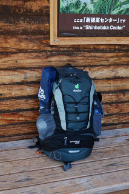
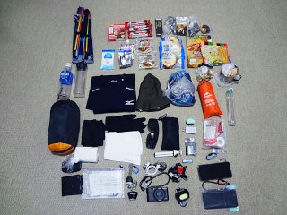

数日の小屋泊・日帰りの軽登山に必要な持ち物リスト(個人的資料) Packing list for Hiking
Home > 旅日記と世界の写真 > 旅の情報 > このページ
Last Update 2024/08/02
数日の小屋泊や日帰りの軽登山。長距離バスや鉄道を使って北アルプス等に出かけるときの持ち物リスト。梅雨明け後から秋の始まりまで、冬山装備が必要のない場合を想定している。費用節約のため、ドライ食料等はすべて携行して現地での飲食出費をゼロにする前提。


初夏〜初秋（非降雪期）の服装
- ベースレイヤー : 半袖 下着シャツ（化繊 即乾）
- ミドルレイヤー : 長袖or半袖 トレーニングシャツ（化繊 即乾）
- アウターレイヤー : ライトシェル・アウタージャケット or ウインドブレーカー等
- スラックス or ショートパンツ（化繊 即乾）
- サポートタイツ（化繊 即乾）
- 靴下 2枚重ね履き（5本指靴下 + 普通の靴下）
- 登山靴・トレイルランニングシューズ等
ザックに入れて持ち運ぶ荷物
|
ザック （常用は25L）
- 半袖 下着シャツ 1着（化繊 即乾、ベースレイヤー予備）
- 長袖or半袖 トレーニングシャツ 1着（化繊 即乾、ミドルレイヤーが長袖なら半袖を）
- ランニング用 スラックス 1着（化繊、緊急予備）
- 靴下 1着
- 薄手ダウン（ユニクロ ウルトラライトダウン。秋の場合）
- アルミシート（防寒用）
- レインウエア上下（夏季防寒にも）
- ゲイター
- 軽アイゼン or チェーンスパイク（必要な場合）
- 折りたたみ傘（登山口で雨予報の場合）
- ザック用レインカバー
- 軍手（滑り止めゴム付き）
- 帽子
- サングラス
- タオル（化繊 速乾）
- 熊よけ鈴2個 と ホイッスル
- ヘッドライト（常用 and 予備の2個）
- ストック（超軽量 折りたたみ式）
- ヘッドライト用電池
- モバイルバッテリー（満充電 確認）
- USB接続ケーブル（microUSBとType-C注意）
- デジカメ用 予備SDカード
- ペットボトル（500mL×2本〜3本）1時間300ml換算
- 登山用折りたたみ プラスチック コップ
- アルファ米（100g, 350kcal×食事回数）
- プロテイン ブロック（50g/1箱, 200kcal, たんぱく10g×食事回数）
- サラダチキン or フィッシュ ソーセージ（50g, たんぱく10g×食事回数）
- 羊羹（150g, 450kcal×行動食分）
- バウムクーヘン1切れ（80g, 350kcal×行動食分）
- パン、おにぎり（前日購入。夜行バスの場合到着時朝食＋昼食分）
- 日焼け止め
- ばんそこう
- テーピング
- カットガーゼ
- 防水テープ
- ビニール手袋（感染防止）
- ハサミ or 折りたたみナイフ
シェーバー（帰路 温泉用）
- 注射器（傷洗浄）
- ビタミン剤
- 整腸剤
|
ウルトラ ライト ザック（登山時にはメインザック内にすべて格納）
- 財布
- 現金（1000円札、百円玉）
- バス、鉄道の切符
- 健康保険証コピー
- 登山届プリントアウト 2通
- スマホ登山アプリに地図ダウンロード（ルートGPXファイルも）
- スマホに時刻表PDFやテキストファイル保存
- 紙の地図（緊急用のコピー）
- スマートフォン（落下防止カラビナ付ストラップ）
- 予備スマートフォン（防水透明袋に入れる）
- デジカメ （充電済 確認、落下防止カラビナ付ストラップ）
- ロールペーパー
- ノート or メモ用紙
- ボールペン
- ガムテープ
- 靴紐（予備）
|